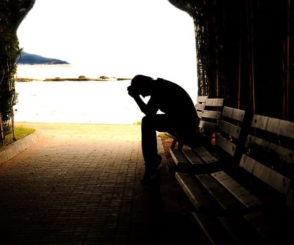

Cancer
One of the main dangers of smoking is cancer and it isn't just lung cancer either it is a lot more than that. Smoking causes cancer of the lungs, the mouth and or throat, voice box, esophagus, stomach, kidney, pancreas, liver, bladder, cervix, colon and or rectom as well as acute myeloid leukemia. I will name them off as they have been listed to you previously, Squamous Cell Carcinoma, Laryngeal Cancer, Adenocarcinoma of the esophagus and stomach, Renal Cell Carcinoma also called RCC, Ducral Carcinoma or also called Adenocarcinoma of the pancreas, Hepatocellular Carcinoma, Urothelial Carcinoma, Squamous Cell Carcinoma of the cervix, Colorectal Cancer of the colon and rectom. Note that if you are diagnosed with any of these you are free to chat here but you should first go and seek out medical attention immediately. These cancers can make it hard to breathe blood in stools abdominal pain, weight loss, weakness or fatigue as well as diarrhea often or constipation but a general change in stool regularity, lumps or sweeling of the neck, long lasting breathlessness, high pitched wheezing, pain when swallowing, blood in urine, painful urination or back pain, loss of appetite yellowing of the skin, itchy skin, blood clots, diabetes, heartburn, feeling sick, feeling bloated after eating, pain in your stomach of breastbone, frequent burping, feeling full very quickly when eating. chest pain, coughing up blood, feeling tired all the time and more.  If you are having any of these symptoms you should also go and seek medical attention immediately. But that is not all it causes as it changes the brain on a chemical level which can cause you to overthink, anxiety, depression, fits of rage over small things or irritability, disconnection, self distancing and even thoughts of suicide. If you are feeling any of these that is why this site was created and we are here for you. You can talk to us online in the Chat with Others Online Page where you can join at the bottom of the page. Some things to think about when you have anxiety is the urge to want to leave where you are and that could be at home around your children or wanting to leave wherever they take you. Disconnect can keep you from forming relationships with your children, impair your relations with your spouse, partner or friends, depression can lead to suicide and is very vital that you talk to someone when feeling depressed of sad for long periods of time that you cant seem to shake. Being irritable can cause you to lash out at friends and family and even sometimes yourself because of anything, it is not bound to any one thing.